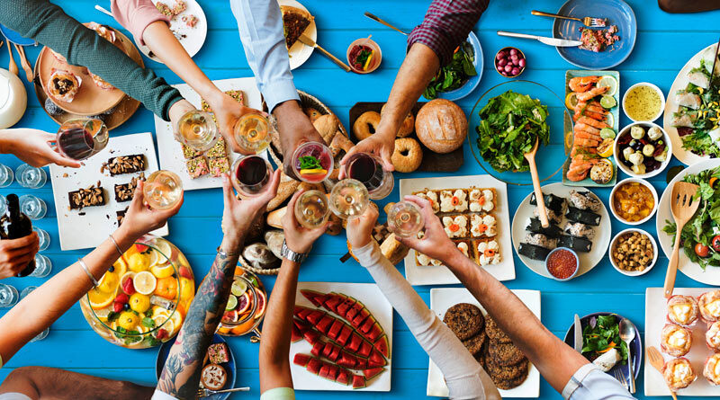

Você adora pensar em pratos diferentes, brincar com ingredientes e ir além do básico?
Saiba, então, que o curso de Gastronomia pode ser uma ótima pedida!
A formação habilita profissionais para o manuseio de alimentos e o preparo de pratos,
mas vai muito além disso. Quem se forma nessa graduação está preparado
para trabalhar
em todas as funções da cozinha, chefiar equipes, produzir eventos ou mesmo na indústria
de alimentos — há diversas opções de carreira, viu?
Um detalhe aqui que muita gente confunde: a pessoa formada em Gastronomia é o gastrólogo
. O gastrônomo é aquele que tem conhecimento, trabalha no ramo,
mas não tem sua
formação em Gastronomia, ok?Assim, depois de concluir essa graduação, o indivíduo se
torna um gastrólogo. Mas o que isso significa na
prática? Em quais áreas é possível
trabalhar?Ser um chefe de cozinha é uma das possibilidades para os egressos do curso de
Gastronomia. No entanto, está
longe de ser a única. Além disso, antes de liderar uma
cozinha, é preciso vivenciar a profissão e adquirir experiência.Para ter uma boa base
prática,é indispensável
assumir funções como a de auxiliar de cozinha e outras que
parecem menos glamourosas, mas são essenciais.
